References
Approved application · approved logoEvery image below is an actual canonical PNG. Open an image for its full resolution. These are authored design scenes, not current-app browser captures.
Reference · link
display-linkActions and implementation pointers
+ New page · Journal · Explore · All pages · ⌄ · Reflections · › · Reading · Space before plans · Ask Journl · Today’s Journal · Close · Instant · Thinking
apps/web/src/components/references/reference-backlinks.tsxpackages/better-editor/src/ui/reference-display.tsxpackages/better-editor/src/ui/reference-views.tsx

SHA256 62acf858fa5152246e765566eb851af0113279e4570efdb79dd4653febc4ef1a

SHA256 86cd2883b276101580e905fb40266408bf7c1680b228f98d0980933cf9b5e578

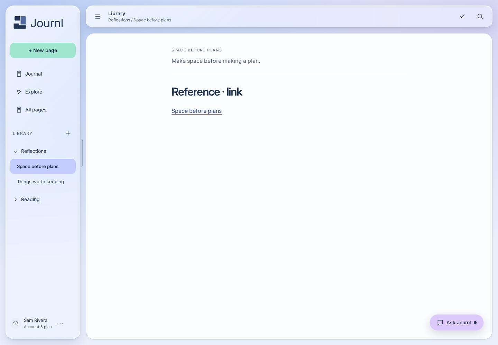
SHA256 a3d66b74cb0b74cff789e969f72d9ac56c0d630f550de02cee2447feb12b80a9

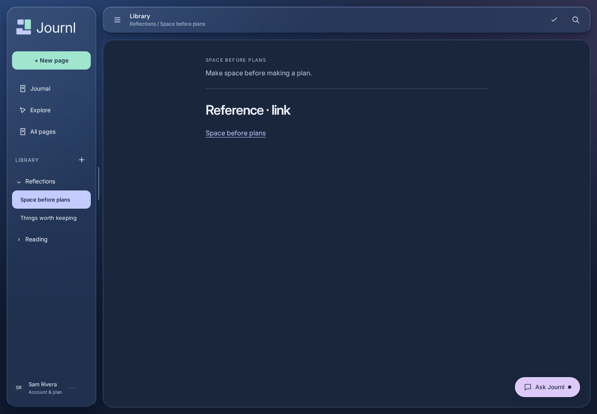
SHA256 2e33186e3ba1d0f8ef210d901723d3e0232bd5954d5240140b8bec3c98dd36b8
Reference · mention
display-mentionActions and implementation pointers
+ New page · Journal · Explore · All pages · ⌄ · Reflections · › · Reading · Ask Journl · Today’s Journal · Close · Instant · Thinking
apps/web/src/components/references/reference-backlinks.tsxpackages/better-editor/src/ui/reference-display.tsxpackages/better-editor/src/ui/reference-views.tsx

SHA256 550ec8c46bb9556c87333e055cdefa08998dcaa855a4aaffe41d3bf6b36f7243

SHA256 00f6ea0051c58dcb87ee140904e12b868ca983a106ec2d388d224ac6e4626fa6

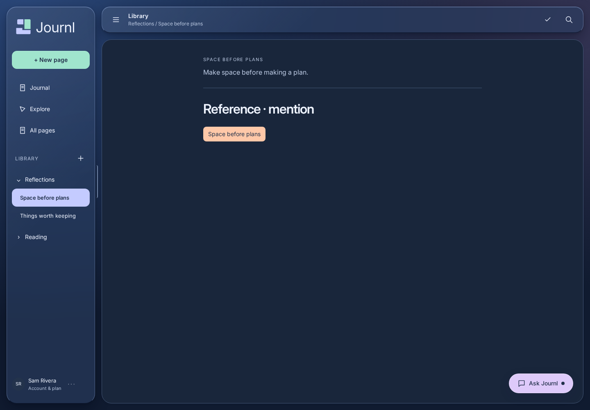
SHA256 c879dbbd75c25740707858fbd82f086b6166ba59f5fd7b74b4a742bab0576ebf

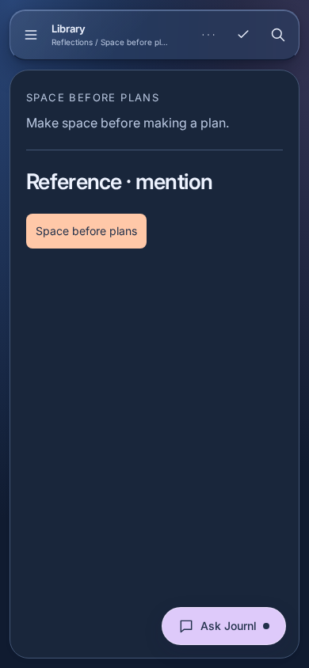
SHA256 1cb5d1ec16a1bba836a85316cc36b0d1919af529139353ab965367b59c01f11a
Reference · card
display-cardActions and implementation pointers
+ New page · Journal · Explore · All pages · ⌄ · Reflections · › · Reading · Open page · Ask Journl · Today’s Journal · Close · Instant · Thinking
apps/web/src/components/references/reference-backlinks.tsxpackages/better-editor/src/ui/reference-display.tsxpackages/better-editor/src/ui/reference-views.tsx

SHA256 f0a1014feee8b297243fd56bc76dfd2de94b5f9e2b917989301c9339fc205c56

SHA256 368521415d0331d309c700da309f3666f7ff86bad62415b6a82ed67d9d37dd56

SHA256 9db18bbb3b13b7227e27f0b6edd01c8bda96757f9bf4c06ac779ccf552c89d85

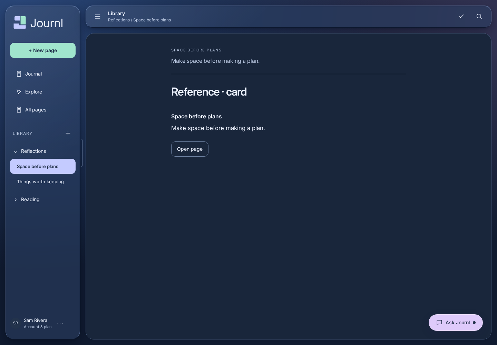
SHA256 9746b2139769fe955968287f46dceb62f85f324b3df4bf63e6642b335995cfd0
Reference · embed
display-embedActions and implementation pointers
+ New page · Journal · Explore · All pages · ⌄ · Reflections · › · Reading · Collapse embed · Open original · Ask Journl · Today’s Journal · Close · Instant · Thinking
apps/web/src/components/references/reference-backlinks.tsxpackages/better-editor/src/ui/reference-display.tsxpackages/better-editor/src/ui/reference-views.tsx

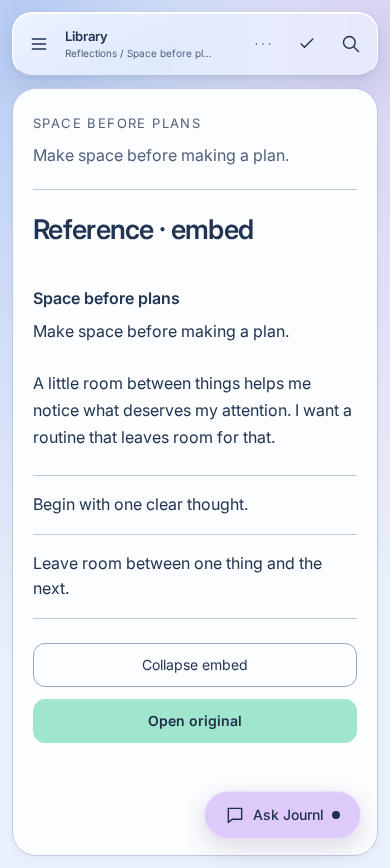
SHA256 7c4e3ff7622357d1c5e5ec4afffe3a998a11a5442ff92ee19f3be9870207fc18

SHA256 b6e294c250ae07a110d861215aafc80a43c24f6f0de6a98aac0c74e66d1cc98a

SHA256 0c2796652e9f1d9682e632c0faa157d31a16fc2aebdc27f3501a69ae266699ec

SHA256 7403cbcca978b069b7643f54f6130e51bbdbef8f12fbe0972668ee323146d5ab
Display reference as
display-menuActions and implementation pointers
× · Link · Mention · Card · Embedded content
apps/web/src/components/references/reference-backlinks.tsxpackages/better-editor/src/ui/reference-display.tsxpackages/better-editor/src/ui/reference-views.tsx

SHA256 86a137474b2d3ac11f04208d47fdc06d780b4567a7e3a3741d877568f0113b7e

SHA256 3d2d2499011354004469045fc07cbf4dc91b1a2d2ef7cc72f93ee4b4606cab1b

SHA256 d197a3a1d0ab6b4877758e1ad12c0cd4a8eba4c13d77fdc4ced2a31ecdc9c52b

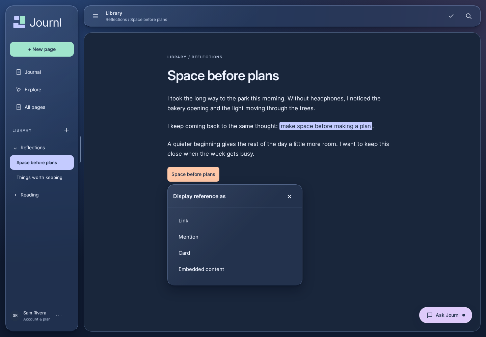
SHA256 e6e7e8035d6ff3bdaa2c819adadb2981c55ad11f648407c2d7239b10e8641447
Reference preview · hover
preview-hoverActions and implementation pointers
× · Open original
apps/web/src/components/references/reference-backlinks.tsxpackages/better-editor/src/ui/reference-display.tsxpackages/better-editor/src/ui/reference-views.tsx

SHA256 324b58aeb7b456e020d8b7700d641b029e2f381b8d30fdc1f7772104138c2176

SHA256 2613af9b66b139c1d599602a1dacc8170af43fe7c6a507127c2a40a8fe056b51

SHA256 d0f564ac06c74f666078b84afb4f1718217123c986bc4a2c27af58f8a14950f9

SHA256 67acf846814a733fa648e669e59cdbfe3e84d7e871c5de3a28859d4140a78446
Reference preview · loading
preview-loadingActions and implementation pointers
×
apps/web/src/components/references/reference-backlinks.tsxpackages/better-editor/src/ui/reference-display.tsxpackages/better-editor/src/ui/reference-views.tsx

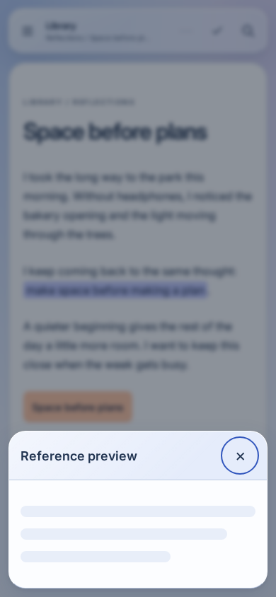
SHA256 0c2d228a0248eb0025eba06493ac1a7a00b71ee9fcc3a3eb2034931664ca9589

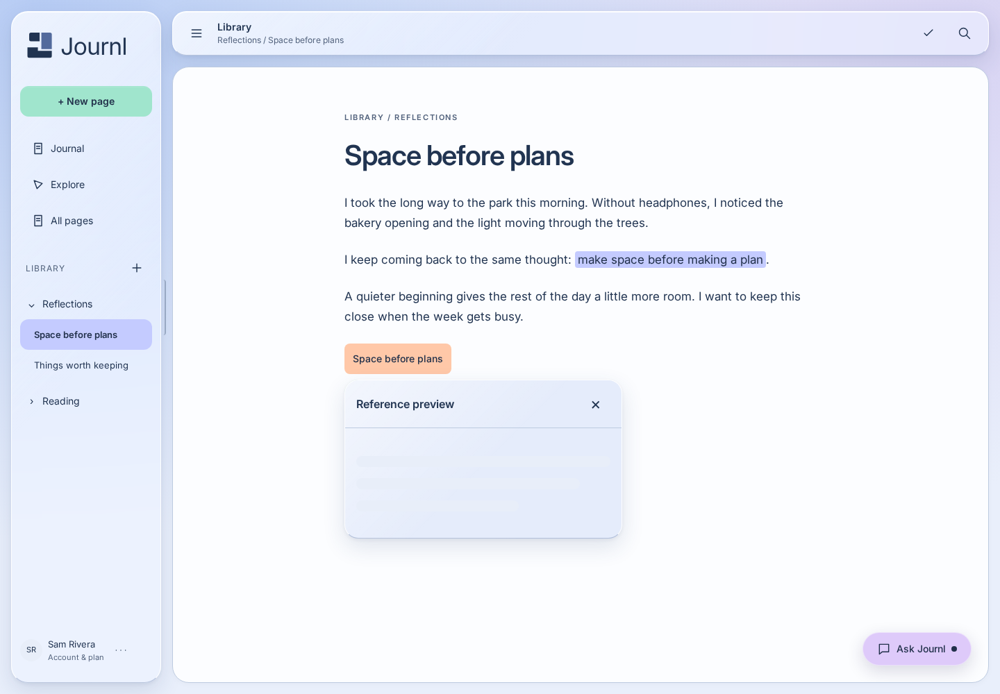
SHA256 91d9fd19529d06caf9288e8bfa4a5c26a05d6f8f8e8ae23b73265b4b460697ec

SHA256 3c034e81478af02c3f7115064ccbb9ea5aa828830bbd12acfd33563540d73680

SHA256 30f498982a7ce358e10770eb5537c2b2160e2410951e42ca443a140bbac906f8


Reference preview · depth
preview-depthActions and implementation pointers
× · Open original
apps/web/src/components/references/reference-backlinks.tsxpackages/better-editor/src/ui/reference-display.tsxpackages/better-editor/src/ui/reference-views.tsx

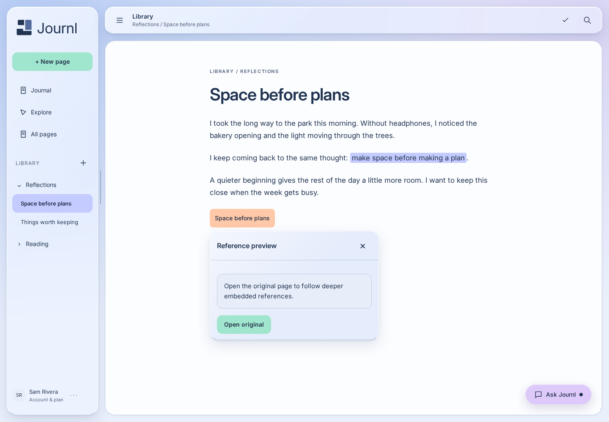
SHA256 1cb001b1ac0a0b16142242b9cd1f9b16e471860590cd1d26e1ae706b532d128a

SHA256 c9a5b39023befa4289d2f22736fc934a7094756f79c1ad96998810f377c70969

SHA256 acff262a4db16fd8dd14cb2ad3812e95c8b8d9bb774ab9683fa38d19f47c4d47

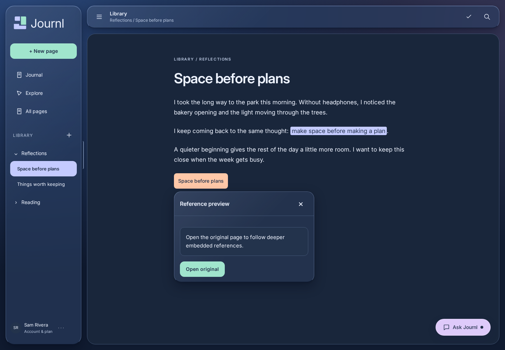
SHA256 e1d326fa1a0fc8623e5035a6ddf676700feb0af63eb7f2195c7a78f4e6101174
Reference preview · cycle
preview-cycleActions and implementation pointers
× · Open original
apps/web/src/components/references/reference-backlinks.tsxpackages/better-editor/src/ui/reference-display.tsxpackages/better-editor/src/ui/reference-views.tsx

SHA256 333cb4ebb7b47a518bf6294a4523c8d8863afe23e627ad0cb405ce8c8db7adca

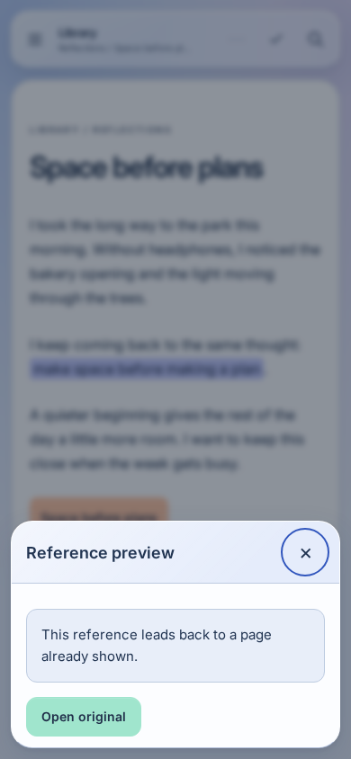
SHA256 f313432099a6886eebba5e07dc449ac968bf582123c81f9ec8280268438f003c

SHA256 5fa4f26a342ca55c6833778b49b5bc6fc2bed34fb19326454ba45be10f0c03e4

SHA256 acaa18767f1acc4ee5247d4e93afdfea5fc4ec5c1b83ccc08088620020ca4f4e